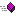

 ВписатьДочернийВПрямоугольник (FitChildInRect) (унаследовано от Контейнер (Container)) |
Вписывает дочерний элемент управления в заданный прямоугольник. |
| ВСтроку (ToString) (унаследовано от ОбъектГодо (GObject)) | Возвращает строковое представление данного объекта. |
| Выше (PlaceTop) (унаследовано от Контрол (Control)) | Смещает выше этот элемент относительно объекта, указанного в параметре Элемент, на величину, указанную в параметре Смещение. |
| ВышеЛевее (PlaceTopLeft) (унаследовано от Контрол (Control)) | Смещает выше и левее этот элемент относительно объекта, указанного в параметре Элемент, на величины, указанные в параметрах. |
| ВышеПравее (PlaceTopRight) (унаследовано от Контрол (Control)) | Смещает выше и правее этот элемент относительно объекта, указанного в параметре Элемент, на величины, указанные в параметрах. |
| ДобавитьДочерний (AddChild) (унаследовано от Узел (Node)) | Добавляет дочерний элемент. |
| ДобавитьСтиль (AddThemeStyleboxOverride) (унаследовано от Контрол (Control)) | Создает локальное переопределение для стиля элемента. Локальные переопределения всегда имеют приоритет перед стилем по умолчанию. Переопределение можно удалить с помощью метода УдалитьСтиль (RemoveThemeStyleboxOverride). |
| Левее (PlaceLeft) (унаследовано от Контрол (Control)) | Смещает левее этот элемент относительно объекта, указанного в параметре Элемент, на величину, указанную в параметре Смещение. |
| ЛевееВыше (PlaceLeftTop) (унаследовано от Контрол (Control)) | Смещает левее и выше этот элемент относительно объекта, указанного в параметре Элемент, на величины, указанные в параметрах. |
| ЛевееНиже (PlaceLeftBottom) (унаследовано от Контрол (Control)) | Смещает левее и ниже этот элемент относительно объекта, указанного в параметре Элемент, на величины, указанные в параметрах. |
| НаЗаднийПлан (SendToBack) (унаследовано от Узел (Node)) | Перемещает элемент в коллекции дочерних элементов родителя на задний план. |
| НаПереднийПлан (BringToFront) (унаследовано от Узел (Node)) | Перемещает элемент в коллекции дочерних элементов родителя на передний план. |
| Ниже (PlaceBottom) (унаследовано от Контрол (Control)) | Смещает ниже этот элемент относительно объекта, указанного в параметре Элемент, на величину, указанную в параметре Смещение. |
| НижеЛевее (PlaceBottomLeft) (унаследовано от Контрол (Control)) | Смещает ниже и левее этот элемент относительно объекта, указанного в параметре Элемент, на величины, указанные в параметрах. |
| НижеПравее (PlaceBottomRight) (унаследовано от Контрол (Control)) | Смещает ниже и правее этот элемент относительно объекта, указанного в параметре Элемент, на величины, указанные в параметрах. |
| ПереместитьМышь (WarpMouse) (унаследовано от Контрол (Control)) | Перемещает курсор мыши в позицию, относительно позиции объекта. |
| ПолучитьДочерние (GetChildren) (унаследовано от Узел (Node)) | Возвращает все дочерние элементы этого узла. |
| ПолучитьОкно (GetWindow) (унаследовано от Узел (Node)) | Возвращает объект Окно (Window), содержащее этот узел. Если узел находится в главном окне, это эквивалентно получению корневого узла. |
| ПолучитьПозициюМыши (GetLocalMousePosition) (унаследовано от Холст (CanvasItem)) | Возвращает положение мыши на этом холсте относительно позиции элемента, используя локальную систему координат этого холста. |
| ПолучитьРодителя (GetParent) (унаследовано от Узел (Node)) | Возвращает родительский элемент данного элемента или Неопределено, если у элемента нет родителя. |
| ПолучитьСтильПанелиЛиния (GetThemeStyleboxLine) (унаследовано от Контрол (Control)) | Возвращает объект СтильПанелиЛиния (StyleBoxLine) с указанным именем свойства темы для контрола. |
| ПолучитьСтильПанелиПлоский (GetThemeStyleboxFlat) (унаследовано от Контрол (Control)) | Возвращает объект СтильПанелиПлоский (StyleBoxFlat) с указанным именем свойства темы для контрола. |
| ПолучитьСтильПанелиПусто (GetThemeStyleboxEmpty) (унаследовано от Контрол (Control)) | Возвращает объект СтильПанелиПусто (StyleBoxEmpty) с указанным именем свойства темы для контрола. |
| ПолучитьСтильПанелиТекстура (GetThemeStyleboxTexture) (унаследовано от Контрол (Control)) | Возвращает объект СтильПанелиТекстура (StyleBoxTexture) с указанным именем свойства темы для контрола. |
| ПолучитьУзел (GetNode) (унаследовано от Узел (Node)) | Возвращает дочерний узел по его имени. |
| Правее (PlaceRight) (унаследовано от Контрол (Control)) | Смещает правее этот элемент относительно объекта, указанного в параметре Элемент, на величину, указанную в параметре Смещение. |
| ПравееВыше (PlaceRightTop) (унаследовано от Контрол (Control)) | Смещает правее и выше этот элемент относительно объекта, указанного в параметре Элемент, на величины, указанные в параметрах. |
| ПравееНиже (PlaceRightBottom) (унаследовано от Контрол (Control)) | Смещает правее и ниже этот элемент относительно объекта, указанного в параметре Элемент, на величины, указанные в параметрах. |
| Сфокусирован (HasFocus) (унаследовано от Контрол (Control)) | Возвращает значение, указывающее, имеет ли объект фокусировку. |
| УдалитьДочерний (RemoveChild) (унаследовано от Узел (Node)) | Удаляет дочерний элемент из коллекции дочерних родителя. При этом сам элемент вместе со своими дочерними элементами из игровых форм НЕ удаляется. |
| УдалитьСтиль (RemoveThemeStyleboxOverride) (унаследовано от Контрол (Control)) | Удаляет локальное переопределение для стиля элемента с указанным именем стиля, ранее добавленное методом ДобавитьСтиль (AddThemeStyleboxOverride). |
| УстановитьФокус (GrabFocus) (унаследовано от Контрол (Control)) | Перехватывает фокус у другого элемента управления и становится сфокусированным элементом управления. |
| Центр (Center) (унаследовано от Контрол (Control)) | Центрирует элемент управления внутри своего родителя с учетом параметров смещения. |
| ЦентрНаТочку (SetCenterToPoint) (унаследовано от Контрол (Control)) | Позиционирует элемент его центром на точку в координатах родителя. |